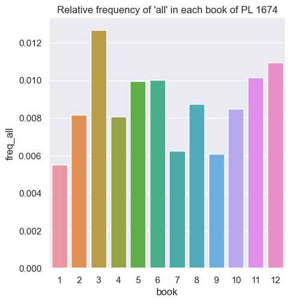
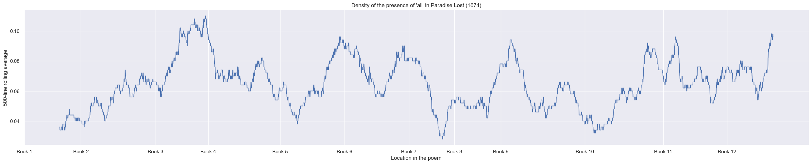
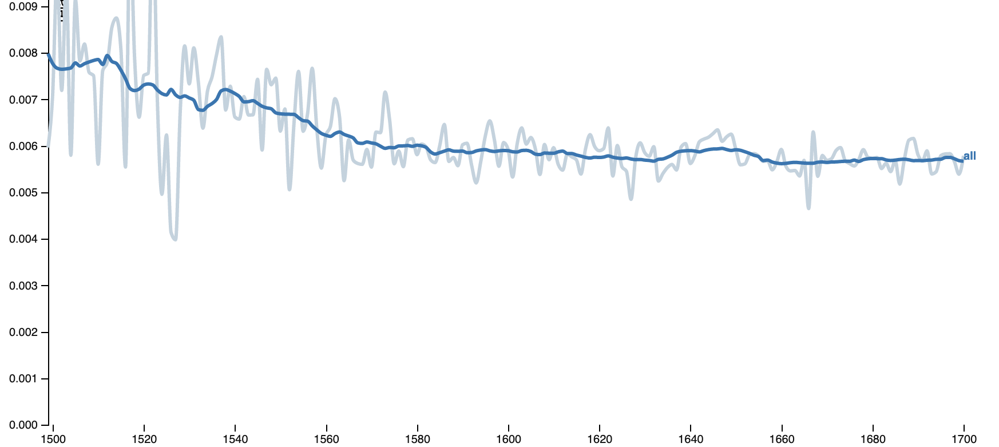
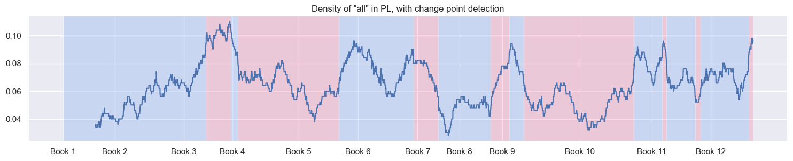
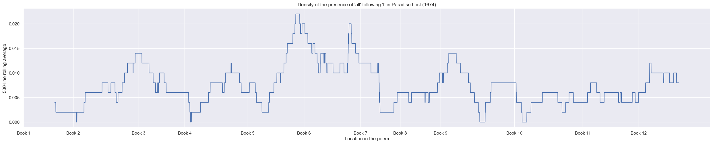
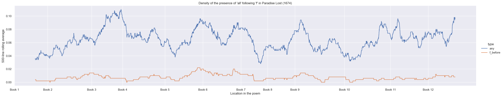

John R. Ladd
11 July 2023
For neither Man nor Angel can discern
Hypocrisie, the onely evil that walks
Invisible, except to God alone,
By his permissive will, through Heav’n and Earth: [3.685]
Mans nourishment, by gradual scale sublim’d
To vital Spirits aspire, to animal,
To intellectual, give both life and sense, [ 5.485 ]
Fansie and understanding, whence the Soule
Reason receives, and reason is her being,
Discursive, or Intuitive; discourse
Is oftest yours, the latter most is ours,
Differing but in degree, of kind the same. [ 5.490 ]
but to nobler sights
Michael from Adams eyes the Filme remov’d
Which that false Fruit that promis’d clearer sight
Had bred; then purg’d with Euphrasie and Rue
The visual Nerve, for he had much to see; [ 11.415 ]
And from the Well of Life three drops instill’d.
So deep the power of these Ingredients pierc’d,
Eevn to the inmost seat of mental sight,
That Adam now enforc’t to close his eyes,
Sunk down and all his Spirits became intranst: [ 11.420 ]
But him the gentle Angel by the hand
Soon rais’d, and his attention thus recall’d.
“seems to be suited to his temperament because he is an absolutist, an all-or-none man” (101).
“All is useful to Milton because of its very obscurity; it provides confusion only at the deep level where it is required” (103).




Yet soon he heal’d; for Spirits that live throughout
Vital in every part, not as frail man [ 6.345 ]
In Entrailes, Heart or Head, Liver or Reines;
Cannot but by annihilating die;
Nor in thir liquid texture mortal wound
Receive, no more then can the fluid Aire:
All Heart they live, all Head, all Eye, all Eare, [ 6.350 ]
All Intellect, all Sense, and as they please,
They Limb themselves, and colour, shape or size
Assume, as likes them best, condense or rare.
Terrestrial Heav’n, danc’t round by other Heav’ns
That shine, yet bear thir bright officious Lamps,
Light above Light, for thee alone, as seems, [ 9.105 ]
In thee concentring all thir precious beams
Of sacred influence: As God in Heav’n
Is Center, yet extends to all, so thou
Centring receav’st from all those Orbs; in thee,
Not in themselves, all thir known vertue appeers [ 9.110
]
Productive in Herb, Plant, and nobler birth
Of Creatures animate with gradual life
Of Growth, Sense, Reason, all summ’d up in Man.

